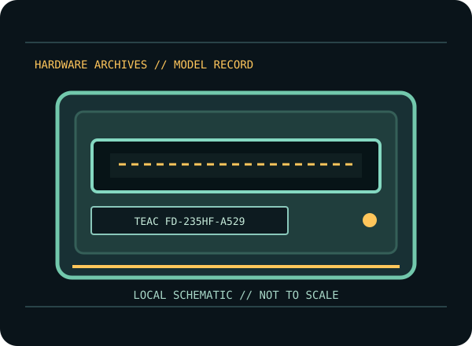

[ INDIVIDUAL COMPONENT // FLOPPY DRIVES ]
TEAC FD-235HF-A529 3.5-inch Drive
A model-specific record for an identified floppy mechanism or external floppy system. It distinguishes cited product documentation from details that depend on the unit’s full suffix, hardware revision and host configuration.

MODEL IDENTIFICATION: TEAC FD-235HF-A529. Verify the nameplate and applicable manual before connection or repair; family-level similarity does not guarantee compatible wiring, firmware, media format or alignment.
Documented product characteristics
| Catalog subcategory | 3.5-inch floppy mechanisms |
|---|---|
| Exact model | TEAC FD-235HF-A529 |
| Manufacturer family | TEAC FD-235HF 3.5-inch mechanism family |
| Source-backed record | The exact FD-235HF-A529 designation is named in TEAC’s FD-235HF specification. Consult that revision for the model’s mechanical and electrical details; no capacity, density mode, or connector pinout is generalized here across suffixes. |
| Connector / host formats / capacity | Consult the model-specific manufacturer documentation below and inspect the unit’s exact configuration. No connector pinout, host format or capacity is generalized where the cited manual does not clearly establish that value for this exact model. |
Model-specific compatibility
- Record the complete model suffix, revision, serial/date code, board/assembly markings, and cable configuration before installation.
- The exact FD-235HF-A529 designation is named in TEAC’s FD-235HF specification. Consult that revision for the model’s mechanical and electrical details; no capacity, density mode, or connector pinout is generalized here across suffixes.
- Confirm drive select, connector orientation, power, host controller, termination, disk density, recording rate and format against the model-specific manual. Do not infer capacity or host support from a shared form factor or connector appearance.
Preservation and service notes
Follow the cited OEM/service procedure for any head cleaning, alignment or adjustment; do not improvise a service method from another family member. Inspect disks for visible damage before inserting them, and stop if the mechanism makes abnormal noise or causes read instability.
Photograph labels and board markings before service. Record the host/controller, cable, firmware/software, test media and observed condition. Keep original media and raw acquisition captures intact; verify checksummed copies before making derivatives.
Manufacturer manuals & source references
- TEAC — FD-235HF-A529/A540/A591 Specification, Revision BTEAC specification explicitly lists the three model suffixes. Use the rows for the exact suffix on the drive label.
Sources point to original manufacturer manuals/specifications or archival scans of that source. Follow the exact model/suffix-specific table and service section; a shared family document is not evidence that all revisions have identical wiring or capabilities.